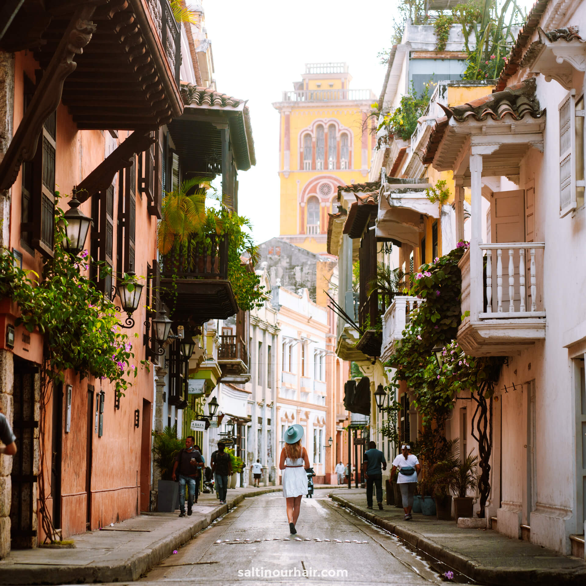

Why Cartagena?
Cartegena, la ciudad heroica
Cartagena de Indias is known, brings together the charm of colonial architecture, the excitement of a vivid night life, fascinating cultural festivals, and lush landscapes, to bring you the perfect vacation experience. The city’s beaches beckon, inviting you to unwind and enjoy yourself in the refreshing breeze and warm waters of the sea.
Framed by its stunning bay, Cartagena de Indias is one of the most beautiful, well-preserved cities in the Americas; a treasure that is currently one of the most heavily frequented tourist destinations in Colombia.